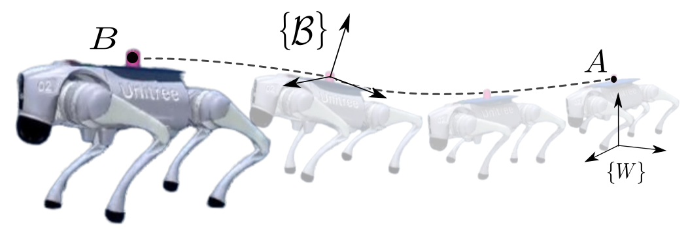

Planning
Sensitivity-aware motion
Optimize the object’s reference motion to reduce sensitivity to uncertain payload and contact parameters, within the quadruped’s motion limits.
IEEE International Conference on Robotics and Automation

In this paper, we present a robust nonprehensile object transportation framework for quadruped robots. An uncertainty-aware trajectory optimization method generates object motions with minimal closed-loop sensitivity to uncertain parameters. The resulting reference trajectory is tracked using a coupled convex model predictive controller that jointly predicts the CoM dynamics of the quadruped and the payload followed by a whole-body QP that enforces ground reaction constraints. The approach is evaluated through extensive simulations and real world experiments under variations in the object’s inertial parameters. Its performance is compared with fixed orientation straight line trajectories as baseline. The results show that the optimized object motion reduces the sliding by approximately 50% compared with the fixed orientation baseline and 30% compared with the straight line baseline, while also achieving lower robot CoM tracking errors.
Planning
Optimize the object’s reference motion to reduce sensitivity to uncertain payload and contact parameters, within the quadruped’s motion limits.
Control
Jointly predict robot and payload dynamics and optimize their contact interaction. Whole-body control maps the resulting commands to joint torques.
Evaluation
Evaluate the full architecture in MuJoCo and test the optimized references on hardware using the robot’s native controller under payload-mass variations.